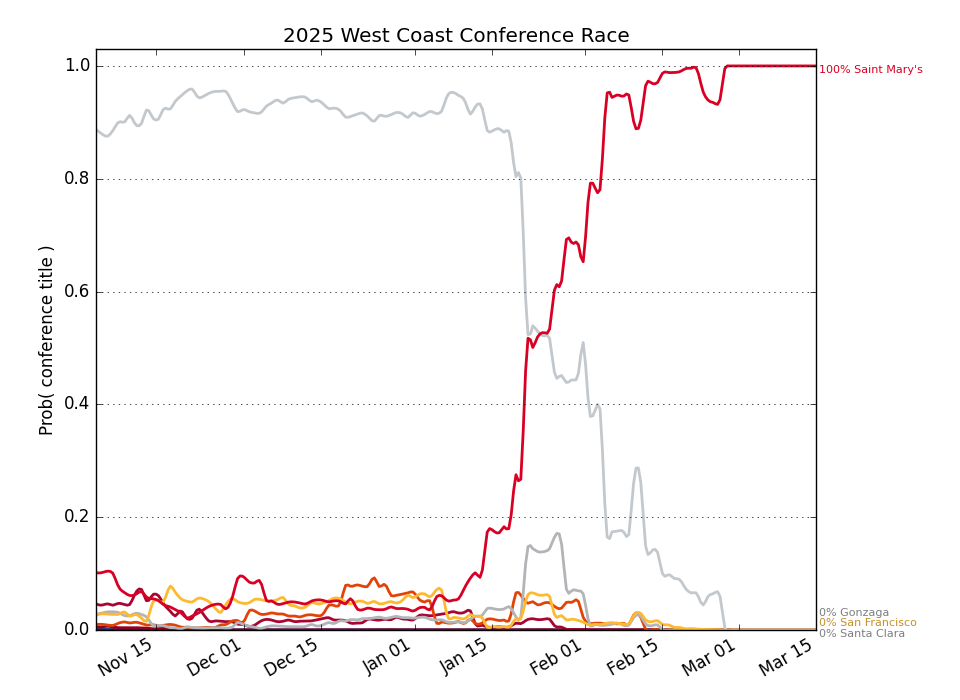

West Coast
Updated with games through Monday, January 12
Conference Projections
Based on 10,000 simulations of the remaining season.
Tiebreaking was done using the
Big Ten tiebreaking procedures.
| West Coast |
Current Record |
Projected Record |
Projected Finish (% odds, with tiebreakers) |
|
Team |
Conf. |
Overall |
Conf. |
Overall |
1st | 2nd | 3rd | 4th | 5th | 6th | 7th | 8th | 9th | 10th | 11th | 12th |
| 1. |
Gonzaga (4) |
5 - 0 |
17 - 1 |
16.9 - 1.1 |
28.9 - 2.1 |
89.2 | 10.2 | 0.5 | 0.0 | | | | | | | | |
| 2. |
Saint Mary's (32) |
5 - 0 |
15 - 2 |
14.5 - 3.5 |
24.5 - 5.5 |
10.1 | 70.2 | 17.0 | 2.1 | 0.4 | 0.1 | 0.1 | 0.0 | | | | |
| 3. |
Santa Clara (55) |
5 - 1 |
13 - 5 |
12.3 - 5.7 |
20.3 - 9.7 |
0.7 | 17.4 | 55.6 | 15.9 | 5.9 | 2.7 | 1.1 | 0.4 | 0.1 | | | |
| 4. |
San Francisco (98) |
4 - 2 |
11 - 7 |
9.6 - 8.4 |
16.6 - 13.4 |
0.0 | 1.4 | 12.6 | 28.9 | 21.9 | 15.6 | 9.6 | 5.7 | 3.0 | 1.2 | 0.2 | 0.0 |
| 5. |
Washington St. (133) |
3 - 2 |
7 - 10 |
8.9 - 9.1 |
12.9 - 17.1 |
| 0.3 | 5.7 | 16.1 | 18.3 | 18.6 | 15.9 | 11.9 | 8.0 | 3.5 | 1.5 | 0.3 |
| 6. |
Pacific (121) |
3 - 3 |
10 - 7 |
8.5 - 9.5 |
15.5 - 13.5 |
| 0.2 | 4.3 | 12.6 | 16.0 | 16.7 | 17.6 | 14.9 | 9.8 | 5.3 | 2.1 | 0.4 |
| 7. |
Loyola Marymount (145) |
2 - 4 |
10 - 8 |
8.2 - 9.8 |
16.2 - 13.8 |
| 0.1 | 2.0 | 11.5 | 15.1 | 16.0 | 16.8 | 15.2 | 12.0 | 6.7 | 3.7 | 1.0 |
| 8. |
Seattle (116) |
1 - 4 |
10 - 6 |
8.2 - 9.8 |
17.2 - 11.8 |
| 0.1 | 2.1 | 10.1 | 15.8 | 17.5 | 16.8 | 15.6 | 11.4 | 6.5 | 3.2 | 0.8 |
| 9. |
San Diego (209) |
2 - 4 |
6 - 11 |
6.5 - 11.5 |
10.5 - 18.5 |
| | 0.2 | 1.6 | 3.9 | 6.5 | 10.4 | 14.6 | 20.2 | 20.2 | 18.1 | 4.3 |
| 10. |
Oregon St. (203) |
2 - 4 |
9 - 10 |
5.9 - 12.1 |
12.9 - 18.1 |
| | 0.0 | 0.8 | 1.9 | 4.1 | 7.3 | 11.9 | 16.7 | 23.2 | 26.1 | 7.8 |
| 11. |
Portland (231) |
2 - 4 |
7 - 10 |
5.4 - 12.6 |
10.4 - 18.6 |
| | | 0.3 | 0.7 | 2.1 | 4.2 | 8.5 | 16.1 | 26.1 | 28.3 | 13.8 |
| 12. |
Pepperdine (261) |
0 - 6 |
3 - 14 |
3.1 - 14.9 |
6.1 - 22.9 |
| | | | 0.1 | 0.1 | 0.3 | 1.1 | 2.8 | 7.2 | 16.8 | 71.6 |
Weekly Changes |
| 1. |
Gonzaga (4) |
|
+4.0 | -3.8 | -0.2 | +0.0 | +0.0 | +0.0 | +0.0 | +0.0 | +0.0 | +0.0 | +0.0 | +0.0 |
| 2. |
Saint Mary's (32) |
|
-4.1 | -2.9 | +6.2 | +0.7 | +0.0 | +0.0 | +0.0 | +0.0 | +0.0 | +0.0 | +0.0 | +0.0 |
| 3. |
Santa Clara (55) |
|
+0.0 | +7.9 | +7.2 | -3.1 | -4.8 | -3.6 | -2.2 | -1.1 | -0.3 | -0.1 | -0.0 | +0.0 |
| 4. |
San Francisco (98) |
|
-0.0 | -0.2 | -2.9 | +5.7 | +3.3 | +0.0 | -2.4 | -1.8 | -1.0 | -0.5 | -0.1 | -0.0 |
| 5. |
Washington St. (133) |
|
+0.0 | -0.1 | +0.9 | +5.0 | +3.0 | +1.4 | -1.8 | -4.2 | -2.4 | -1.5 | -0.3 | -0.1 |
| 6. |
Pacific (121) |
|
+0.0 | -0.4 | -3.4 | -2.0 | -0.1 | -0.2 | +1.5 | +1.7 | +1.5 | +1.1 | +0.5 | -0.1 |
| 7. |
Loyola Marymount (145) |
|
+0.0 | -0.1 | -2.9 | +0.7 | +1.5 | +0.4 | -0.2 | -0.5 | +0.1 | +0.4 | +0.6 | -0.0 |
| 8. |
Seattle (116) |
|
+0.0 | -0.4 | -4.7 | -7.3 | -3.9 | -0.8 | +1.9 | +3.7 | +5.2 | +3.6 | +2.1 | +0.6 |
| 9. |
San Diego (209) |
|
+0.0 | -0.0 | -0.1 | -0.2 | +0.2 | +0.0 | +0.3 | -0.8 | -1.7 | +1.6 | +4.2 | -3.7 |
| 10. |
Oregon St. (203) |
|
+0.0 | -0.0 | +0.0 | +0.4 | +0.6 | +1.7 | +2.2 | +2.1 | -0.9 | -2.6 | +2.2 | -5.7 |
| 11. |
Portland (231) |
|
+0.0 | +0.0 | +0.0 | +0.2 | +0.5 | +1.6 | +2.6 | +4.2 | +5.6 | +6.9 | +1.0 | -22.5 |
| 12. |
Pepperdine (261) |
|
+0.0 | +0.0 | +0.0 | -0.1 | -0.3 | -0.6 | -2.0 | -3.2 | -6.0 | -9.1 | -10.1 | +31.5 |
This table gives the probability of earning at least a share of a given place.
So there are no tiebreakers and there can be multiple first place teams, for example.
|
Projected Finish (% odds, no tiebreakers) |
|
Team |
Outright |
1st | 2nd | 3rd | 4th | 5th | 6th | 7th | 8th | 9th | 10th | 11th | 12th |
| 1. |
Gonzaga |
81.9 | 92.5 | 7.2 | 0.2 | | | | | | | | | |
| 2. |
Saint Mary's |
7.0 | 16.9 | 68.9 | 13.0 | 1.0 | 0.2 | 0.0 | 0.0 | | | | | |
| 3. |
Santa Clara |
0.4 | 1.6 | 23.0 | 58.8 | 10.6 | 3.6 | 1.5 | 0.6 | 0.2 | 0.1 | | | |
| 4. |
San Francisco |
0.0 | 0.0 | 1.6 | 14.5 | 32.7 | 22.1 | 13.8 | 8.0 | 4.5 | 1.9 | 0.7 | 0.1 | |
| 5. |
Washington St. |
0.0 | 0.0 | 0.5 | 7.6 | 22.8 | 21.3 | 17.6 | 13.0 | 8.9 | 5.1 | 2.2 | 0.8 | 0.1 |
| 6. |
Pacific |
0.0 | | 0.3 | 6.0 | 17.9 | 18.5 | 17.5 | 15.7 | 12.5 | 7.2 | 3.1 | 1.1 | 0.1 |
| 7. |
Loyola Marymount |
0.0 | | 0.1 | 4.5 | 16.4 | 17.0 | 17.0 | 15.3 | 13.0 | 9.1 | 4.8 | 2.4 | 0.4 |
| 8. |
Seattle |
0.0 | | 0.2 | 3.6 | 15.4 | 18.1 | 18.2 | 15.6 | 13.8 | 8.6 | 3.9 | 2.0 | 0.5 |
| 9. |
San Diego |
0.0 | | 0.0 | 0.6 | 3.5 | 5.9 | 9.4 | 12.6 | 16.9 | 20.2 | 15.6 | 12.6 | 2.7 |
| 10. |
Oregon St. |
0.0 | | | 0.1 | 1.4 | 3.0 | 5.9 | 10.0 | 14.0 | 19.5 | 24.6 | 17.7 | 3.9 |
| 11. |
Portland |
0.0 | | | 0.0 | 0.5 | 1.6 | 3.3 | 5.8 | 9.8 | 17.1 | 26.1 | 26.7 | 9.1 |
| 12. |
Pepperdine |
0.0 | | | | 0.0 | 0.1 | 0.2 | 0.7 | 1.6 | 4.0 | 9.0 | 18.9 | 65.5 |
